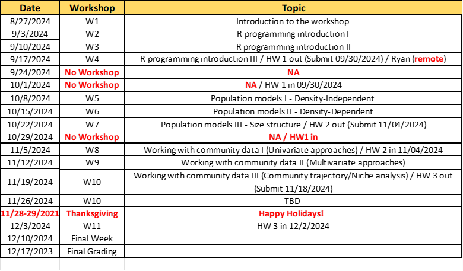

Syllabus
BSC 6926 B52: R workshop on population and community ecological modeling
Fall 2024
Tuesdays 1 - 2:30 pm
Format:
- In-person + Face-to-Face: Glenn Hubert Library 260
- Remote: Zoom link
Instructors: Dr. Rolando O. Santos, Dr. W Ryan James, Dr. Nathan Dorn
Rolando Santos
rsantosc@fiu.edu (preferable; include BSC6926 in subject line)
O:305-919-4104
Office: MSB 353 (when in BBC), OE-148 (when in MMC)
W. Ryan James
wjames@fiu.edu (preferable; include BSC6926 in subject line)
Nathan Dorn
ndorn@fiu.edu (preferable include BSC6926 in subject line)
O: 305-919-4234
Office: MSB 351
Course description and learning outcome:
This workshop is connected to PCB5423 course, and it will be a co-requisite and will be offered to students enrolled in this course. The workshop is designed to provide an active learning experience by analyzing and illustrating several of the topics that will be discussed in PCB5423 by using ecological models and analytical tools. Specifically, R programming language will be used to learn and implement ecological models and analytical tools and discuss ecological fundamentals using quantitative examples. R is becoming one of the most used programming platforms to analyze and illustrate ecological patterns/data; thus, we hope to introduce novice and beginner coders to this fantastic programming language.
When and where:
In-Person Sessions: Lectures and hands-on programming/modeling exercises will be an integral part of the workshop’s learning experience; thus, most sessions will be based on face-to-face meetings to facilitate learning and assistance during the workshop sessions. In-person sessions will be offered only at BBC.
Remote Lectures: I will use Zoom to teach remotely if our face-to-face class cannot meet as regularly scheduled. I will contact you using CANVAS and email you the details of the Zoom link. Also, I will use Zoom for remote lectures when I expect to be out of town for fieldwork or meetings. I will announce any changes to the schedule one week or more in advance.
Office hours: Tuesdays and Thursdays, 3:00 – 4:00 pm, or by appointment. Please request a Zoom link by email or pass by my office for office hours meetings. I am constantly in/out of my office since my lab spaces are not in MSB; thus, please send me an email or talk to me after the workshop lectures to set up a meeting at my office.
Teaching schedule:
Changes to this schedule and other announcements regarding the course will be posted in CANVAS (sent FIU email addresses only).

Learning materials:
Textbook for R exercises (S) Stevens, M.H.H. 2010. A primer of ecology with R. ISBN 978-0-387-89881-0 (Electronically available at FIU Library)
E-book version: https://hankstevens.github.io/Primer-of-Ecology/
Other learning materials: required R scripts/files and readings for the workshop exercises will be posted to CANVAS and the workshop website https://seascapeecologylab-workshops.github.io/BSC6926-B52_Fall2024/.
Please bring a laptop to class so you can follow the R scripts during class and perform workshop exercises. Please, contact us if you do not have access to a laptop
R and R studio are free software environment for statistical computing and graphics required for the workshop. Please download it to your laptops:
Download R: https://cran.r-project.org/bin/windows/base/
Download Rstudio: https://www.rstudio.com/products/rstudio/download/
Materials and links on R programming and statistical analyses helpful in learning R and the workshop exercises/homework/project
- R for Data Science by Hadley Wickham and Garret Grolemund – An introduction to programming with R: https://r4ds.had.co.nz/
- Quick-R by datacamp: Quick overview on R programming and statistical approaches.There are more tutorials, but you will be required to register
- RStudio Cloud Training Exercises: https://rstudio.cloud/learn/primers
- Virtual Ecology Portal/EcoVirtual R Package: Website that provides various examples of population and community models that will be discussed in class and the workshop. There is also an R package (EcoVirtual) you can use to run various models included on this website: http://ecovirtual.ib.usp.br/doku.php?id=start
- ModernDive: Introductory book on R and statistical inference: https://moderndive.com/index.html
Teaching:
Lectures and R programming exercises will be part of each workshop session to introduce several topics on population and community modeling and analyses and provide context to the ecological fundamentals taught in PCB5423. The grade will be based on participation, homework exercises, and final project (see below).
Grading:
The final grade will be composed of 2 assignments/tasks. These two assignments/tasks are: 1) Class participation (attendance and class exercises) and 2) R exercises homework.
Class participation (Total 10 pts) will count for 25% of your final grade. This grade will consist of attending, participating, and submitting R exercises (0, 1). After each workshop, you will be asked to do and submit the results of a series of R exercises that you will try to answer to the best of your knowledge. Class discussion includes asking and answering questions, insightful comments and suggestions, and helping peers.
R homework exercises (Total 75 pts – 25 pts/hw) will count for 75% of your grade. After several R “lab”/workshop sessions, students will turn in an assignment showing proof that they ran some of the code in R and understood the outputs of the models. The programming/coding aspect of the homework can be completed as a collective effort of student teams; however, students should independently answer and submit the homework questions. Please submit homework answers as PDFs or Word following a Markdown or Quarto format and the R files showing the code used to answer the questions.
Rubric:
Grade scale is A: 100-90; B: 89-80; C: <79. This is a graduate-level workshop; thus, if you are taking this course, it is because you have a genuine interest in ecological learning and developing your academic career. For this reason, I think final grades should be pass (A or B) or no pass (C). I will give students a C (or less) who didn’t commit to the work.
Students will be graded on their performance in the above areas ONLY. Future career plans will have ZERO influence on the grade you receive in this class. Incomplete grades will be considered only under extraordinary circumstances.
Make-up policy:
I will provide make-up opportunities only when students present valid excuses (e.g., medical/family emergencies, COVID-19-related emergencies and precautions, major fieldwork trips, or conferences). Regardless of the reason, please contact me to identify alternative methods for completing course requirements, depending on the type of assignment missed and the severity of missed assignments. Below is a guideline of potential make-up scenarios/methods (Subject to change): - Participation – Due to the limited number of sessions, I will award a participation point for only one missed session with a validated and accepted excuse. - Homework – Make-up alternatives only for medical (including COVID-19) emergencies. The make-up will consist of submitting the homework materials at a later date (e.g., 48-72 hours after the submission deadline), depending on the gravity of the emergency.
FIU Discrimination, Harassment and Sexual Misconduct Policy Statement (Title IX):
Florida International University (the University) is committed to encouraging and sustaining a learning and living environment that is free from discrimination based on sex, including gender, gender expression, gender identity, and sexual orientation. Discrimination based on sex encompasses Sexual Misconduct, Sexual Harassment, Gender-Based Harassment, Domestic Violence, Dating Violence, and/or Stalking https://dei.fiu.edu/civil-rights-and-accessibility/index.html.
FIU is committed to eliminating sexual harassment. In accordance with the FIU Faculty Senate guidelines, this syllabus includes a warning that any misconduct will be reported. FIU’s sexual harassment policy is available at: https://dei.fiu.edu/civil-rights-and-accessibility/sexual-misconduct/index.html
Professional and academic integrity:
Students are encouraged to employ critical thinking and rely on data and verifiable sources to interrogate all assigned readings and subject matter in this course as a way of determining whether they agree with their classmates and/or their instructor. No lesson is intended to espouse, promote, advance, inculcate, or compel a particular feeling, perception, viewpoint, or belief.
FIU is a community dedicated to generating and imparting knowledge through excellent teaching and research, the rigorous and respectful exchange of ideas, and community service. All students should respect others’ right to have an equitable opportunity to learn and honestly demonstrate the quality of their learning. Therefore, all students are expected to adhere to a standard of academic conduct, which demonstrates respect for themselves, their fellow students, and the University’s educational mission. The University deems all students to understand that if they are found responsible for academic misconduct (e.g., cheating, plagiarism, academic dishonesty), they will be subject to the Academic Misconduct procedures and sanctions, as outlined in the Student Handbook.
Honesty Code Statement:
FIU defines academic misconduct in the Student Conduct and Honor Code (Code) as “any act or omission by a Student, which violates the concept of academic integrity and undermines the academic mission of the University in violation of the Code.” Code violations include, but are not limited to: academic dishonesty, bribery, cheating, commercial use, complicity, falsification, and plagiarism. The Code is available here: https://regulations.fiu.edu/regulation=FIU-2501